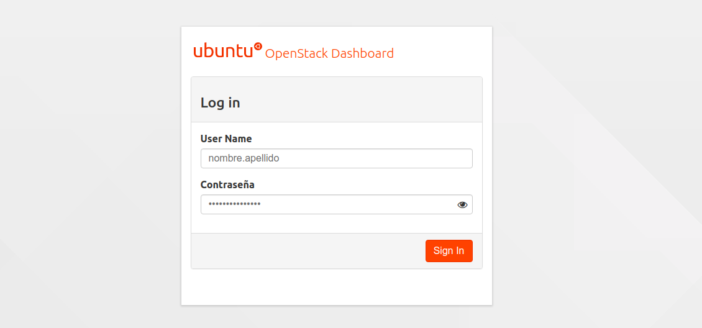
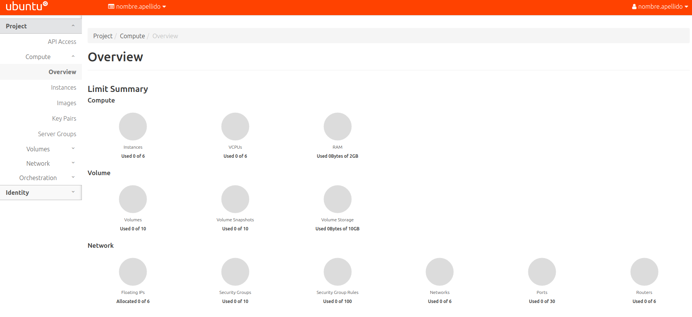
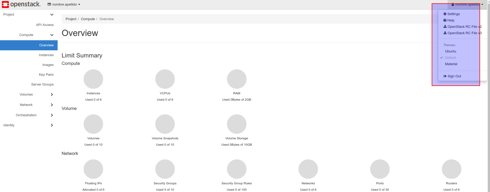

Primeros pasos en OpenStackLDV
Solicitud de cuenta de usuario y proyecto
Para poder acceder a los servicios de OpenStackLDV tienes que disponer de una cuenta de usuario con acceso a un proyecto (tenant).
Cada usuario (user) dispone de una cuenta y puede ser miembro de uno o varios proyectos.
Un proyecto (o tenant) es una arupación de recursos del cloud (núcleos de procesador -VCPU-, RAM o espacio de almacenamiento) disponible para uno o más usuarios. Los recursos disponibles se definen a través de quotas. Pueden crearse proyectos para un usuario, un departamento, una organización, ... Por convención, cuando un proyecto contienen a un solo usuario se suele denominar igual que el usuario.
En OpenstackLDV de forma predeterminada cada usuario pertenece a un proyecto con su mismo nombre pero puede ser miembro de más de un proyecto (p.e. 2ASIR-SRI, 2ASIR-SAD, Profesores, ...)
Las operaciones que un usuario puede realizar sobre un proyecto quedan determinadas por un rol (role) (conjunto de permisos que establecen qué operaciones puede realizar un usuario en un proyecto dado).
Solicita tu usuario y contraseña de acceso a tus profesores.
Acceso a Horizon
Una vez que dispongas de tu nombre de usuario y contraseña puedes iniciar sesión en el panel web de Horizon, hay dos opciones disponibles:

Una vez iniciada la sesión podrás ver los recursos disponibles (Computación, Almacenamiento y Red) en tu/s proyecto/s.
En la parte superior derecha verás tu nombre de usuario y en la parte superior derecha el nombre del proyecto activo y un desplegable con los proyectos a los que puedes acceder.

Cambio de contraseña
La primera vez que inicies sesión deberías cambiar tu contraseña. Lo puedes hacer en la parte superior derecha, pinchando en el nombre de usuario con la opción Settings, Change Password.

Tema
Puedes cambiar el tema del panel web de Horizon pinchando en el nombre de usuario con la opción
